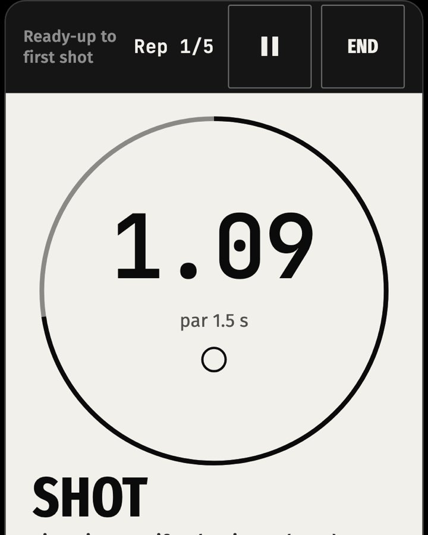
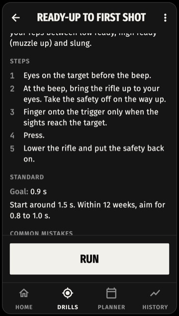
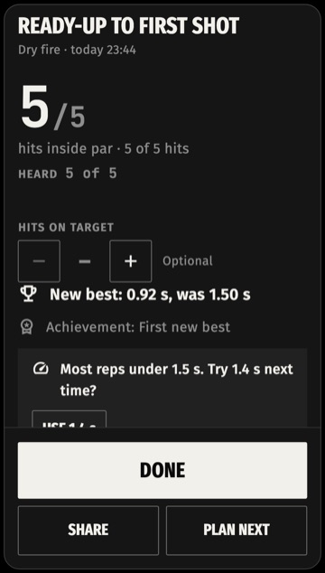

A dry-fire shot timer in the phone you carry
Dry-fire drills, par times and a training log for rifle owners. Offline. No account.
Android 7+ · Sign up, then buy on Google Play

The run screen
What it hears
- Dry fire
- Hears the dry press after a one-minute calibration.
- Live fire
- Listens for shots at the range.Beta Try it on your range day.
- Tested on
- Samsung Galaxy Z Fold
- Struggles
- An AR-15 with the hammer down is silent on a dry press.
- Loud bays with many shooters.
Doesn't hear yours? Within 48 hours of buying, you can ask Google Play for a refund.
The app




Pay once. Nothing else.
- One payment, no subscription
- No account
- No ads
- Everything you enter stays on your phone.
Questions
How can a phone hear a dry press?
The microphone listens for the click of your trigger. A one-minute calibration learns your rifle's click; nothing is recorded, it is analysed on the phone.
Does it work with my rifle?
If the press makes a click, yes. An AR-15 with the hammer down is silent: pull the charging handle before each press.
What about a loud range?
Put the phone close, in front of you. If a shot is missed, tap it in; it stays marked as tapped.
What if it doesn't hear mine?
Write to kholtimer@gmail.com with your phone model and rifle. Within 48 hours of buying, you can ask Google Play for a refund.